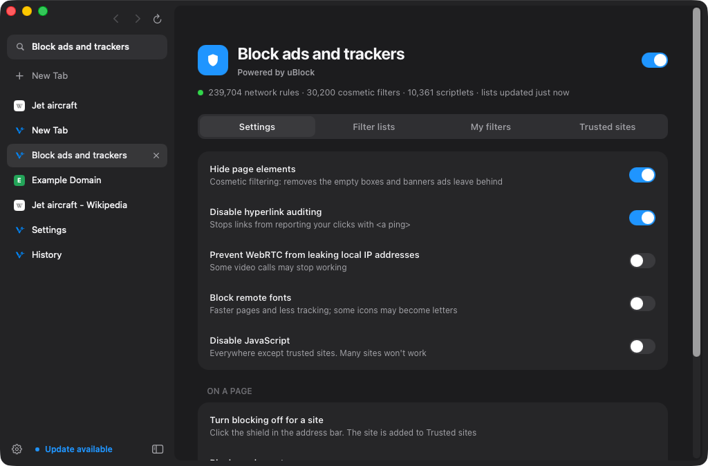

Volant runs uBlock Origin's filter lists, with the same defaults and the same filter syntax, compiled into the content blocker inside WebKit. There's nothing to install and no extension to keep updated. It's on from the first launch, and one switch turns it off.

Blockers that run as extensions inspect each request in JavaScript. Volant compiles the filters ahead of time, so WebKit can match them natively before a request leaves your Mac.
The shield in the address bar shows whether blocking is on for the site you're on. Click it to turn blocking off for that site, and click again to turn it back on. The page reloads either way.
Press ⌥⌘B, or right-click the shield, then point at anything on the page. Use Wider and Narrower to adjust what's selected, then click Block. It's saved to My filters.
Write your own filters in uBlock Origin's syntax, including cosmetic filters, procedural filters and +js() scriptlets.
Sites where Volant blocks nothing. Add whole domains, and their subdomains are trusted too.
uBlock Origin's catalogue: ads, privacy, malware, cookie notices, social widgets and annoyances. Tick a list and choose Apply Changes.
The lists update themselves every four days. Choose Update Now in Blocker Settings to fetch them straight away.
Under Volant → Blocker Settings…, next to the main switch.
uBlock Origin's lists use a rich syntax. This is how each part is handled.
| Filters | Example | In Volant |
|---|---|---|
| Network filters | ||ads.example^$script,third-party | WebKit content rules, with $domain, $to, resource types, first or third party and match-case |
| Exceptions | @@||example.com/player.js | Copied into every rule list, with $important and $badfilter respected |
| Regex filters | /banner[0-9]+\.gif/ | Translated into WebKit's regex dialect when they fit it |
| Generic cosmetic | ##.ad-banner | Hidden on every site by WebKit's own style rules |
| Site cosmetic | example.com##.sidebar-ad | Hidden on that site, including example.* entities |
| Procedural | example.com##div:has-text(Sponsored) | Volant's procedural engine: :has-text, :upward, :matches-css, :xpath, :remove, :style and more |
| Scriptlets | example.com##+js(set-constant, ads, false) | 33 of uBlock Origin's scriptlets, rewritten for Volant, injected only into matching sites |
| Page exceptions | @@||example.com^$generichide | $document, $generichide, $elemhide and $specifichide |
| Preprocessor | !#if env_safari | Evaluated as uBlock Origin on Safari would |
| Redirects | $redirect=noopjs | Blocked instead. WebKit can't serve a stand-in file |
| Not supported | $removeparam, $csp, $header, ##^ | Skipped. WebKit's content blocker can't rewrite requests, headers or HTML |
The lists uBlock Origin turns on by default.
The rest of the catalogue, by kind.
No. Volant doesn't run browser extensions. It uses uBlock Origin's filter lists, default list selection and filter syntax, and compiles them into WebKit's built-in content blocker. That's why it says "Powered by uBlock". The extension's logger and dynamic filtering aren't part of Volant.
Click the shield in the address bar to turn blocking off for that site. If you'd rather keep blocking on, open Blocker Settings and make sure uBlock filters – Unbreak and Quick fixes are ticked, then choose Update Now.
It speeds them up. Matching happens inside WebKit's compiled content blocker, and every blocked request is one your Mac never downloads. The only script Volant adds to a page is that site's own fixes, and only when the lists have some.
It downloads each list from its usual address, the same request the uBlock Origin extension makes. Nothing about the pages you visit is sent.
Yes. Use the switch at the top of Blocker Settings, or Settings → Privacy. Setup also asks on the first launch.